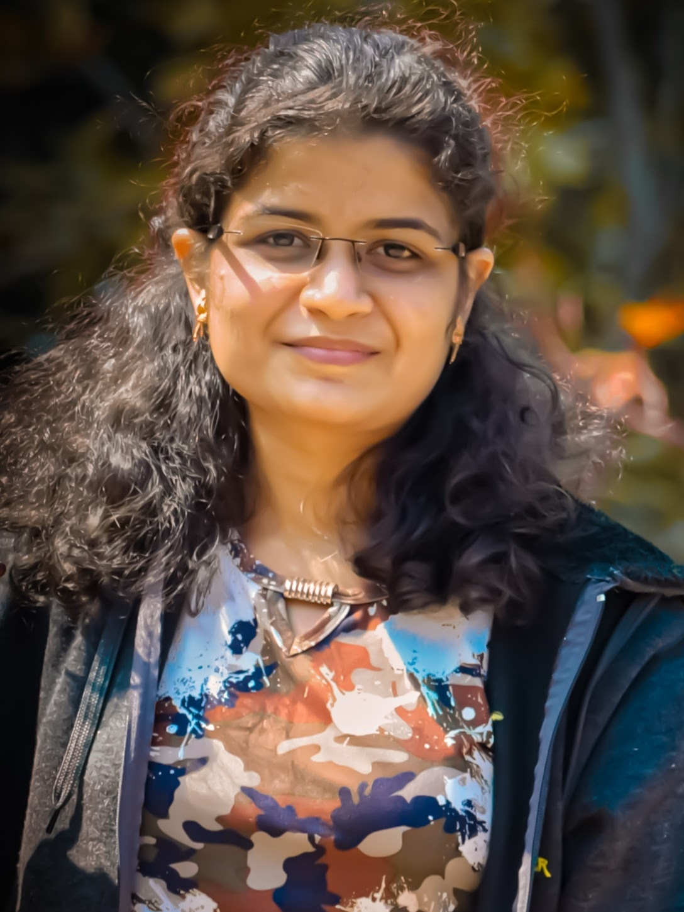
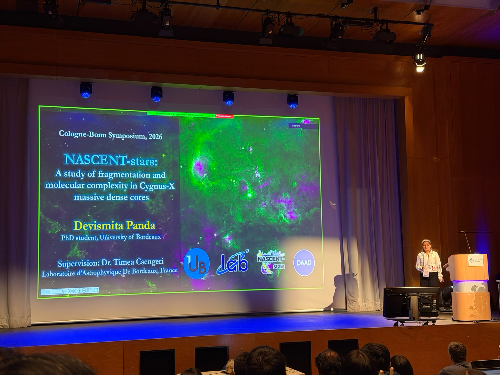
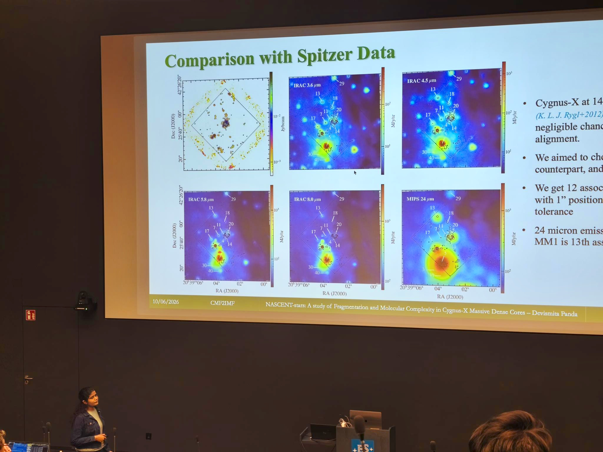
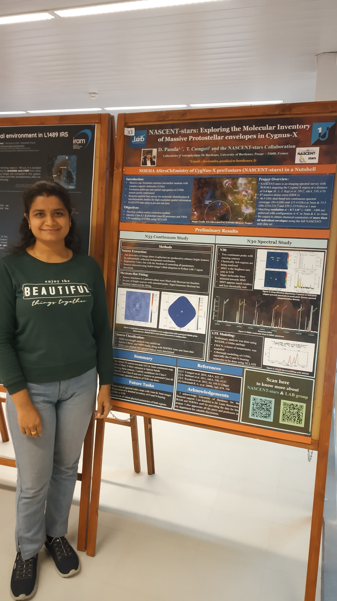
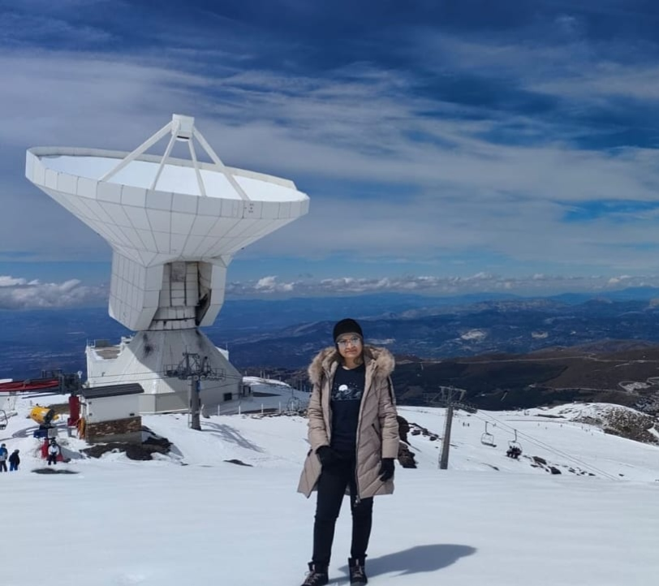

PhD, Infinity² International Graduate Program
Laboratoire d'Astrophysique de Bordeaux (LAB), France (Sept 2024–Ongoing)
Thesis: "Origin of Complex Organic Molecules (COMs) in Massive Star-Forming Regions"
Currently, I study how the formation and evolution of organic molecules are linked to the physical conditions within massive dense cores—interpreting their chemical footprints to reveal the physical conditions during high-mass star formation.

I am a PhD student in Astrophysics at the Laboratoire d’Astrophysique de Bordeaux (LAB), Bordeaux, France with Dr. Timea Csengeri. I study the fragmentation and molecular complexity in Cygnus-X massive dense cores.
Current scientific interests include protostellar envelopes, hot cores, complex organic molecules, spectral line identification and modeling, fragmentation, source extraction and the connection between physical condition and chemical composition.
NOEMAALMAIRAM 30mPythonXCLASSGILDASCASACARTA
When I'm not immersed in research, you'll often find me drawing, painting, reading non-fiction and philosophy, or behind a camera.
Don't hesitate to contact me for scientific discussions, collaborations, and opportunities!
Investigating the physical and chemical origins of complex organics through high-resolution & large bandwidth millimeter observations.
We often wonder: Where do the building blocks of life originate? Complex Organic Molecules (COMs) are the fundamental chemical precursors to life as we know it, and during massive star formation, a variety of COMs emerge, such as sugars, alcohols, aldehydes, and even unsaturated carbon chain species. I am deeply driven to understand their origin, abundances, and chemical evolution, in connection with the different physical processes during massive star formation.
Massive stars form in the densest regions of molecular clouds with thick envelopes of dust and gas around them. This high dust obscuration makes the direct observation of protostars very difficult. Then, How do we uncover their secrets? By observing Dust. We trace the dust emission with highly sensitive observations that tell us about the mass and density of these massive envelopes.
And how do we know what COMs they seed into their surroundings? By observing the spectrum towards these massive envelopes. In millimeter wavelengths, we observe the rotationally excited spectra of gas-phase molecules, which act like a unique molecular fingerprint at a particular frequency. These spectra serve as powerful proxies for the physical conditions of these natal environments, helping us directly correlate chemistry with physical parameters.
These fundamental questions are explored using high-resolution millimeter-wavelength observations as part of the NASCENT-stars large program (PI: T. Csengeri), which targets 17 massive and dense regions of the Cygnus-X molecular cloud complex. I study two such regions: CygX-N53 and CygX-N30, offering a compelling opportunity to compare the chemistry of sources differing in age, mass, and physical conditions.
Peer-reviewed articles showcasing recent scientific work.
D. Panda, T. Csengeri, et al. · (To be submitted)
F. Motte, N. Le Nestour, R. Veyry, N. Brouillet, T. Nony, B. Thomasson, F. Louvet, I. Joncour, E. Moraux, A. Men'shchikov, T. Yoo, A. Ginsburg, A. Gusdorf, A. M. Stutz, R. Galvan-Madrid, T. Csengeri, R. H. Alvarez-Gutierrez, M. Armante, Y. Bernard, M. Bonfand, S. Chevalier, N. Cunningham, P. Dell'Ova, M. Gonzalez, A. Koley, F. A. Olguin, D. Panda, Y. Pouteau, J. Salinas, P. Sanhueza, N. A. Sandoval-Garrido, M. Valeille-Manet · Astronomy & Astrophysics · DOI: 10.1051/0004-6361/202660192
Y. Gao, T. Boekholt, D. Panda, T. Akiba, S. Toonen · MNRAS · DOI: 10.1093/mnras/staf1460
A concise overview of research experience and education.
Laboratoire d'Astrophysique de Bordeaux (LAB), France (Sept 2024–Ongoing)
Thesis: "Origin of Complex Organic Molecules (COMs) in Massive Star-Forming Regions"
I. Institute of Physics (PH1), University of Cologne, Germany (Mar 2026–May 2026)
Funded by DAAD
Indian Institute of Space Science and Technology (IIST), India (Jun 2023–Mar 2024)
Pondicherry University, India (Oct 2020–Jun 2022)
Result: 90.07% with Distinction
Conferences, Observatory visits, and public outreach events.

Contributory talk at the Cologne-Bonn Symposium, 2026 @University of Cologne, Germany.

Contributory talk at the CMF2IMF conference, 2026 @ESO Headquarters, Garching near Munich, Germany.

Presenting NASCENT-stars preliminary results poster at the COST NanoSpace AI in Astrochemistry School, 2025 @Aalto University, Finland.

At the IRAM 30m telescope located in the Sierra Nevada Mountain Range near Granada, Spain in 2025.
For collaborations, scientific discussions, and opportunities.
Email: devismita.panda@u-bordeaux.fr
Institution: Laboratoire d'Astrophysique de Bordeaux (LAB), University of Bordeaux